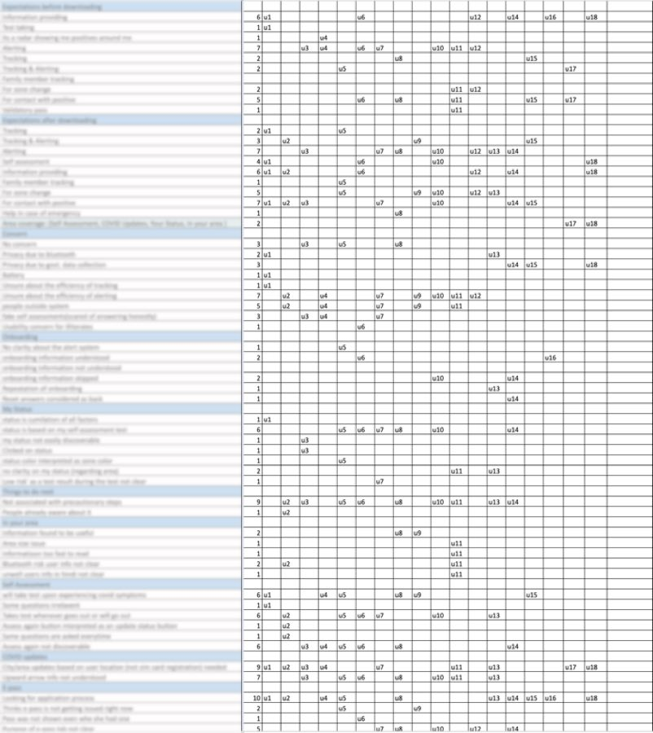
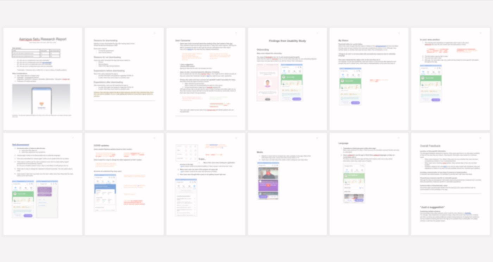

Aarogya Setu
- Role
- UX research intern
- Team
- With a UX researcher at MakeMyTrip and an independent researcher
- Duration
- 1 week
- Methods
- Qualitative interviews, remote usability testing, content analysis, first-click testing
- Deliverable
- Insights report
A government app downloaded by over 50 million people in three days, evaluated while it kept changing.
The brief

Aarogya Setu is a Government of India initiative, built by the National Informatics Centre in partnership with MakeMyTrip. It exists to support the Department of Health in informing users about risks, best practices and advisories to contain COVID-19. The app launched in early April 2020, and the end of that month was the right time to ask users how it was working.
The aim: a quick UX evaluation for the product team.
What made it hard
- A very broad user base. The app had over 50 million downloads in the first 3 days, so we had to define user groups that could scale.
- No data on higher-risk users. Everyone was a user, but access to higher-risk groups was limited and we had no user data, so we used snowball sampling for them.
- One week. The stakes were high and the product teams moved fast. We needed quick, reliable evaluations at their speed.
- A moving target. The interface changed during the study as needs changed in the crisis.
The app kept updating during the study, so our research protocol had to update with it.
The process
Objectives
- Expectations
- Concerns
- Understanding
- Usability issues
Research methodology
- Remote sessions
User groups
- Broad user base
- Narrowed to 4 categories
Recruitment strategy
- No app user data
- Snowball sampling
- Screener to filter
Note taking
- Time crunch
- Predefined categories
Conducting sessions
- Dynamic changes during the study
- Qualitative questions
- Task scenarios
Analysis
- Content analysis
Report
Phase 2
Objectives: understand what users expect, worry about and understand about the app, and find the major usability issues.
Method: strict lockdown meant every session was remote. Each ran 30 to 45 minutes.
Choosing the user groups
We listed every consideration for user profiles, ranked the crucial ones, and folded in a few nice-to-have cases, then made sure each category had representation. Four groups came out of it, with the higher-risk group marked as vulnerable.
- Recruitment criteria
- App usage: novice, expert
- Device: Android, iOS
- Mobility: staying inside, moving out
- Language and geographical spread
- Zone: inside a containment zone, not in a containment zone
- Profession: frontline workers, others
- E-pass: yes, no
- Health issues: no, yes (vulnerable group)
- Age group: young, elderly (vulnerable group)
| Type | Vulnerable | Non-vulnerable |
|---|---|---|
| Users within a containment zone | A1 | A2 |
| Users not in a containment zone | B1 | B2 |
Vulnerable means someone aged 60 or over, or with a history of health problems.
Other considerations- App usage (novice or expert user)
- Language and geographical spread (Rajasthan, Delhi/NCR, Haryana, Karnataka, Maharashtra, Telangana, Gujarat and more)
- Profession (frontline workers)
Recruitment: we used friends, family and social media, with a screener to sort people into the 4 groups. There was no incentive, and participants' goodwill made it work.
Note-taking: a template with predefined categories sped up the notes to match the team's pace.
Sessions: each person answered qualitative questions, then completed task scenarios while thinking aloud: onboarding as a first-time user, checking my status, self-assessment, precautionary steps, checking COVID updates, and checking an e-pass.
Synthesis

We used content analysis: count how often themes appear in qualitative data. We skimmed the notes, built tally sheets to quantify the findings, and let the major themes surface. We also kept important qualitative findings that didn't emerge in the counts but mattered to the team. With the clock running, I had to put “fear of missing out” on interesting patterns aside and stay with the process.
What I took from it
- Watch for the saturation point closely, and don't spend time on more sessions than needed.
- Predefined note categories, updated as new points came up, kept the sessions on pace.
- Content analysis works well in a fast, agile setting.
Outcome

An evaluation report, synthesised and compiled in one day, with actionable insights backed by user quotes.
- It communicated user feedback on the app's concepts and interfaces.
- Icons, symbols and wording have to match users' mental models.
- It covered what users understood, expected and assumed.
- It proposed suggestions based on how other solutions handle the same problems.
- It was shared with stakeholders and government leaders.
Impact
- The insights persuaded the team to address user concerns and challenge assumptions.
- The report helped make the app more usable for people from varied backgrounds.
- It gave the product team a useful basis for design and functionality decisions.
The team was accountable for decisions affecting 60 million lives.